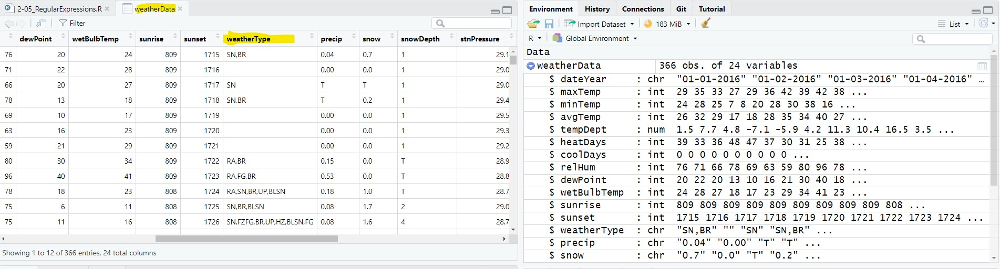

Which Statements
Datetime Objects
The script for this lesson can be downloaded here. (right-click, save file as..., save to scripts folder)
The data for this lesson can be downloaded here (left click, save to data folder)
Like last lesson we are going to use the the data from Lansing2016NOAA-3.csv:
weatherData = read.csv(file="data/Lansing2016NOAA-3.csv");
In the last lesson we used which() to find numeric values in a vector that met a specific condition:
highPrecip = which(precipNum > 1);
And there were 8 days with precipitation greater than 1 inch:
> highPrecip
[1] 73 91 225 228 229 273 290 307
In this lesson we will be searching for values that meet a condition within string (chr) columns.
In weatherData, the string column weatherType contains information about the type of weather (e.g., Fog, Snow, Rain, etc.) that occurred during that day:

The weatherType column within the weatherData data frame
We can use which() to find which values in weatherType are equal to a specific string, for instance, which values are equal to snow, "SN"?
snowyDays = which(weatherData$weatherType == "SN");
The above code:
The result is a vector, snowyDays, with 11 values, so 11 days exclusively had snow:
snowyDays: int [1:11] 3 16 17 29 ...
There were many more days with snow but many were not counted in the search because those days had other weather condition. For instance, the first and fourth column in fig ## had snow (SN) and breeze (BR). We will deal with those situations later in this lesson when we talk about grep() and Regular Expressions.
We can use the vector of indexed values (snowyDays) to index other vectors like avgTemp and avgWind.
Let's find the temperatures and wind speeds on days that it was snowy
snowyDayTemps = weatherData$avgTemp[snowyDays];
snowyDayWinds = weatherData$windSpeed[snowyDays];
since snowyDays = c(3, 16, 17, 29, 39, 45, 136, 351, 354, 364, 365)
avgTemp[snowyDays] is equivalent to avgTemp[c(3, 16, 17, 29, 39, 45, 136, 351, 354, 364, 365)];
This gives the temperature on the 11 days indexed in the snowyDays vector
avgWind[snowyDays] is equivalent to avgWind[c(3, 16, 17, 29, 39, 45, 136, 351, 354, 364, 365)];
This gives the winds on the 11 days indexed in the snowyDays vector
The average temperatures and average wind speeds for the 11 days with snow were:
> snowyDayTemps:
[1] 29 30 18 24 34 9 40 12 11 34 28
> snowyDayWinds
[1] 10.0 13.8 15.5 10.7 6.8 8.1 10.9 9.4 11.5 16.7 14.0
the temperature and wind speeds on the 11 snowy days
Just like with if-else conditional statements, we can create more complex conditions by using the and ( & ), or ( | ), not ( ! ), and not equal (!=) operators.
Let's find all days that has rain or snow using the or operator ( | ):
rainOrSnow = which(weatherData$weatherType == "SN" |
weatherData$weatherType == "RA");
There were 39 days that had rain or snow. Since we know 11 of those days had snow, the other 28 must be rain:
> rainOrSnow
[1] 3 16 17 29 39 45 69 77 82 87 90 110 120 134 136 137 150 158 165 175
[21] 178 193 197 211 224 258 264 271 272 281 282 294 304 313 337 351 354 364 365
Note: these results also do not include the days that had rain along with other conditions.
We can reverse the condition to look for days that did not have "RA" nor "SN" using the not ( ! ) operator.
The original condition was:
weatherData$weatherType == "SN" | weatherData$weatherType == "RA"
You can invert a condition using the not operator ( ! ) and parentheses around the original condition:
!(weatherData$weatherType == "SN" | weatherData$weatherType == "RA")
And then put the inverted condition into the which() statement. Here we are saying, "which days did not have (snow or rain)"
noRainNorSnow = which(!(weatherData$weatherType == "SN" |
weatherData$weatherType == "RA"));
And we see that noRainNorSnow has 327 values, which is 366-39:
noRainNorSnow: int [1:327] 1 2 4 5 6 7 ...
rainOrSnow: int [1:39] 3 16 17 29 39 ...
An equivalent way to reverse the logic is to say, "which days that did not have snow and days that did not have rain"
noRainNorSnow2 = which(weatherData$weatherType != "SN" &
weatherData$weatherType != "RA");
The result is the same:
noRainNorSnow2: int [1:327] 1 2 4 5 6 7 ...
In this section, we will look at two common ways to incorrectly invert logic.
If you take this condition:
weatherData$weatherType == "SN" | weatherData$weatherType == "RA"
And put a not operator in front without parentheses:
!weatherData$weatherType == "SN" | weatherData$weatherType == "RA"
Then you have the logic: not SN or rain.
So, you will get all days that:
If you choose to use the not equal operators on each component of the condition, then you need to flip the operator from or to and (or vice versa).
Here we did not flip the operator and kept the conditional operator or:
noRainNorSnow_bad = which(weatherData$weatherType != "SN" |
weatherData$weatherType != "RA");
And the result is that all 366 values meet the condition:
noRainNorSnow_bad: int [1:366] 1 2 3 4 5 6 7 ...
all values meet the conditnion of not rain and not snow
In the application for this lesson, I will let you explain why saying "not snow or not rain" gives you every value in the column.
We also can combine conditions from two different columns. For examples, let's get all days that were raining and 70 degrees or more:
rainAndHighTemps = which(weatherData$weatherType == "RA" &
weatherData$avgTemp >= 70);
There are 7 days where both these condition (rain and temperatures 70 or more) occurred:
> rainAndHighTemps
[1] 150 178 193 197 211 224 264
Days with rain and average temperatures at or above 70
Similar to if(), we can use which() to create more complex condition. The trick is to make sure you have the parentheses correct, because, like in Algebra, parentheses determine the order of operations. Note: in programming, just like Algebra, adding extra parentheses does not hurt.
So, let's say we want days where there was rain or snow and temperatures between 25 and 40:
complexCond = which( (weatherData$weatherType == "RA" |
weatherData$weatherType == "SN") &
(weatherData$avgTemp >= 25 &
weatherData$avgTemp <= 40) );
There were 7 days that meet all the conditions above:
compleCond: int [1:7] 3 16 39 136 337 364 365
The results of a more complex condition inside a which() statement
For the above code, we have the inner parentheses with these two conditional statements:
(weatherData$weatherType == "RA" | weatherData$weatherType == "SN")
(weatherData$avgTemp >= 25 & weatherData$avgTemp <= 40)
And an outer parenthses that ands the two conditional statements together:
( (weatherData$weatherType == "RA" | weatherData$weatherType == "SN") &
(weatherData$avgTemp >= 25 & weatherData$avgTemp <= 40) )
In the Console we can break down the steps:
> which(weatherData$weatherType == "RA" | weatherData$weatherType == "SN")
[1] 3 16 17 29 39 45 69 77 82 87 90 110 120 134 136 137 150
[18] 158 165 175 178 193 197 211 224 258 264 271 272 281 282 294 304 313
[35] 337 351 354 364 365
> which(weatherData$avgTemp >= 25 & weatherData$avgTemp <= 40)
[1] 1 2 3 6 7 8 9 10 14 15 16 25 26 27 28 30 32
[18] 33 34 35 36 37 38 39 40 47 52 53 54 55 56 57 58 60
[35] 65 66 78 79 80 81 83 84 85 86 88 89 93 94 95 96 97
[52] 98 99 100 101 103 136 300 301 317 324 325 326 327 328 330 331 332
[69] 336 337 338 339 340 341 342 343 344 346 347 356 357 358 359 360 362
[86] 363 364 365 366
And see that 3, 16, 39, 136, 337, 364, and 365 are the only value in both conditional statements.
The elephant in the room is that we are only capturing days that exclusively had snow or rain using which().
But we know from looking at the weatherType column (fig ##) that many values in weatherType have "SN" or "RA" with other weather conditions -- and these are not being captured because which() only checks for values that are exactly "SN".
We really want every value that contains "SN". This cannot be easily done using which() but it can be done easily using grep(). grep() is a powerful tool that allows one to search for patterns within a string.
grep() is a very powerful tool for finding patterns within strings (the process is known as Regular Expressions, which would take many lessons to properly teach). In this lesson, we are only using the most basic functionality in grep() which is finding a substring within a string.
Let's start with this vector:
grepTestVec = c("one fish", "two fish", "one llama", "two llama",
"red fish", "blue fish");
grep() return the indices of the vectors value that contain the substring specified:
test1 = grep("two", grepTestVec); # values that have the substring "two"
test2 = grep("lla", grepTestVec); # values that have the substring "lla"
test3 = grep("fish", grepTestVec); # values that have the substring "fish"
And we can match the index values below with the values in grepTestVec:
test1: int [1:2] 2 4
test2: int [1:2] 3 4
test3: int [1:2]1 2 5 6
We are going to use grep() to find the substring ("SN") contained within a vector of string values (weatherType):
snowyDaysGrep = grep(weatherData$weatherType, pattern="SN");
grep(), like which(), produces a vector of the index values that meets the condition (i.e., index of the weatherType values that contain "SN").
And we can see there were actually 65 days that had snow -- a much more reasonable result for Lansing, MI!
snowyDaysGrep: int [1:65] 1 3 4 10 11 12 13 14 16 17...
snowyDaysGrep is a vector with 65 indexed values, representing the 65 days in Lansing that had snow.
Just like before, we can use the results of a grep() to index another column. We will use snowyDaysGrep to index the avgTemp and windSpeed columns in weatherData:
snowDaysGrepTemp = weatherData$avgTemp[snowyDaysGrep];
snowDaysGrepWind = weatherData$windSpeed[snowyDaysGrep];
And we can see the average temperature and wind speeds for the 65 days that had snow:
> snowDaysGrepTemp
[1] 26 29 17 27 13 18 15 26 30 18 11 13 17 19 22 36 26 30 24 38 26 26 34 28
[25] 16 14 9 20 27 20 30 29 34 22 19 18 20 28 34 32 36 28 35 33 28 34 40 40
[49] 34 33 28 26 23 26 28 18 15 10 12 21 14 11 36 34 28
> snowDaysGrepWind
[1] 15.5 10.0 7.7 17.8 12.2 18.2 13.2 5.6 13.8 15.5 13.1 7.6 4.4 5.5
[15] 6.3 18.2 13.3 14.1 10.7 13.5 7.9 7.3 6.8 12.9 13.8 14.5 8.1 6.9
[29] 3.8 5.9 18.9 16.5 16.2 13.1 9.7 3.7 2.2 5.4 10.2 10.4 10.9 11.6
[43] 10.7 7.9 9.4 13.8 10.9 19.2 5.9 8.6 16.7 10.2 8.6 10.3 13.8 10.8
[57] 16.7 11.3 9.4 4.1 8.1 11.5 7.3 16.7 14.0
note: if you want to sort the values, you can use sort(snowDaysGrepWind)
Similar to which() statements, we can use the or ( | ) operator to find all values in weatherType that contain either SN or RN:
daysWithPrecipGrep = grep(weatherData$weatherType, pattern="RA|SN");
And we get a vector with 179 values in it, representing the 179 days that had rain or snow (or both):
daysWithPrecipGrep: int[1:179] 1 3 4 8 9 10 ...
An equivalent result can be obtained by getting the grep() results for RA and SN separately and then combining them using union():
rainyDaysGrep = grep("RA", weatherData$weatherType);
snowyDaysGrep = grep("SN", weatherData$weatherType);
daysWithPrecipUnion = union(rainyDaysGrep, snowyDaysGrep);
Looking at the days with rain, snow, and the combination of the two:
rainyDaysGrep: int[1:124] 8 9 10 15 25 26 ...
snowyDaysGrep: int[1:65] 1 3 4 10 11 12 13 ...
daysWithPrecipUnion: int[1:179] 1 3 4 8 9 10 ...
Note: the rainy days and snowy days adds up to 189 whereas the union has only 179 days. This is because there were 10 days that had both rain and snow... like day 10.
Using union() seems more complicated than just using the or operator ( | ) in grep(), but union() allows for more complex situations.
For instance if we want to combine results from different columns like days that were hazy (HZ) or had temperatures above 90 (maxTemp > 90):
hazyDays = grep(weatherData$weatherType, pattern="RA");
hotDays = which(weatherData$maxTemp > 90);
hazyOrHotDays = union(hazyDays, hotDays);
And we see there were 124 hazy days, 11 hot days, and 132 days that were hazy or hot:
hazyDays int[1:124] 8 9 10 15 25...
hotDays: int[1:11] 163 171 194 202 ...
hazyOrHotDays: int[1:132] 8 9 10 15 25...
Using union() to combine hazy and hot days
With grep() we can find days with rain or snow using the or operator ( | ) but we cannot use grep() to return days with both rain and snow (i.e., there is no & operator in grep())
#### this does not work!
# daysWithRainAndSnow = grep(weatherData$weatherType, pattern="RN&SN");
The reason for this requires a lengthy explanation of how grep() works (and regular expressions, in general), which is beyond the scope of this class.
What we want is the index values that are in both rainyDaysGrep and snowyDaysGrep .
Luckily, there is a function for that called intersect(). intersect() is the sibling function to union(), intersect() takes two vectors and produces a vector of values that occur in both the original vectors.
In this case we will use intersect() on the vectors rainyDaysGrep and snowDaysGrep:
daysWithRainAndSnow = intersect(rainyDaysGrep, snowyDaysGrep);
daysWithRainAndSnow has 10 values, representing the 10 values that are in both rainyDaysGrep and snowyDaysGrep
> daysWithRainAndSnow
[1] 10 26 34 35 84 94 98 101 352 359
union() is functionally similar to the or operator, intersect() is functionally similar to the and operator.
The equivalent to a not operator is a bit more complex -- the function to use is setDiff().
In setDiff(), we compare two vectors:
setDiff() returns the the values in the first vector that are not in the second vector effectively subtracting out values from the second vector that are in the first vector.
If the are 10 values in a vector and 4 of them (3,5,6,9) meet a condition:
meetsCondition = c(3,5,6,9);
invertCondition = setdiff(1:10, meetsCondition);
And we see that invertCondition is all values from 1 to 10 not represented in meetsCondition:
invertCondition: int[1:6] 1 2 4 7 8 10
If we want to find the days without rain or snow, we can take the days with rain or snow:
and use setDiff() to find the difference between that and a vector with all 366 values:
daysWithoutPrecip = setdiff(1:366, daysWithPrecipGrep);
And we see that adding up the daysWithPrecipGrep (179) and daysWithoutPrecip (187), we get 366 days:
daysWithPrecipGrep: int [1:179] 1 3 4 8 9 10 ...
daysWithoutPrecip: int [1:187] 2 5 6 7 22 24 ...
If you have any questions regarding this application, feel free to email them to the instructor here. You can attach the whole Project Folder as a zipped file.
A) Create a new script file named app2-05.r and put it in your scripts folder.
B) In comments at the top of your script answer the following:
C) Give two ways to change this logic (fig ##) to rain and temperatures less than 70:
Note: the answer for both will have the same 21 values
D) Modify the which() in fig ## to:
E) Use grep() (and union/intersect/setdiff) to find days with snow (SN) but not blowing snow (BLSN)
F) Challenge: Use grep() to on the precip column in weatherType to (note: precip is a string column):
Answer the following in comments inside your application script: